측량및지형공간정보기사 (2006-09-10 기출문제)
1과목: 측지학 및 위성측위시스템
1. 다음 설명 중 옳지 않은 것은?
- 측지학이란 지구내부의 특성, 지구의 형상 및 운동을 결정하는 특성과 지구표면상 점 간의 산호위치관계를 결정하는 학문이다.
- 지각변동의 조사, 항로 등의 측량은 평면측량으로 실시한다.
- 측지측량은 지구의 곡률을 고려한 정밀한 측량이다.
- 측지학은 지구의 특성 결정을 위한 물리측지학과 위치결정을 위한 기하측지학으로 나눌 수 있다.
(정답률: 알수없음)

2. 다음 중 관성 항법장치에서 획득되는 관측치는?
- 거리
- 속도
- 가속도
- 절대위치
(정답률: 알수없음)
3. 실측된 중력값은 직접 비교를 할 수가 없으므로 기준면의 값으로 보정해야 한다. 중력보장과 관계없는 것은?
- 조석(潮汐)보정
- 경도(經度)보정
- 지형(地形)보정
- 아이소스타시보정
(정답률: 55%)
4. 성과표에서 삼각점 A에 대한 진북방향각(x 좌표측 기준)이 a=+10° 16'42"일 때 시준점 B에 대한 방향각이 75° 32‘51“라면 AB 측선의 방위각은 얼마인가?
- 75° 16‘ 09“
- 75° 49‘ 33“
- 255° 16‘ 09“
- 255° 49‘ 33“
(정답률: 37%)
5. 다음 설명 중 잘못된 것은?
- 방위각은 자오선의 북방향을 기준으로 하여 시계방향으로 잰 각이다.
- 세계시(universal time)는 경도 0도를 표준 자오선으로 정한 시각이다.
- 지오이드는 평균해수면을 육지 내부까지 연장한 가상곡면으로 엄격히 말하면 요철이 있는 곡면이다.
- 구과량이란 구면삼각형 내각과 180° 와의 차이로 (-)값이다.
(정답률: 20%)
6. GPS 측위 작업 중 DOP(Dilution of Precision)에 관련한 설명 중 옳지 않은 것은?
- DOP는 위성의 기하학적 배치상태가 정확도에 어떻게 영향을 주는가를 추정할 수 있는 척도이다.
- DOP는 위성의 위치, 높이, 시간에 대한 함수관계가 있다.
- 계산된 DOP 값이 큰 수치로 나타나면 정확도가 높다는 의미이다.
- DOP에는 세부적으로 GDOP, PDOP, HDOP, VDOP 및 TDOP 등이 있다.
(정답률: 67%)
7. 지구가 타원체인 증거에 대한 설명으로 옳지 않은 것은?
- 축척이 고위도로 갈수록 크다.
- 추시계는 극으로 갈수록 빨라진다.
- 위도 1° 사이의 지표상의 거리는 고위도(극)일수록 커진다.
- 곡률반경이 적도로 갈수록 크다.
(정답률: 알수없음)
8. 어느 지방의 자침 면적이 W 6.5°이고 북각은 N 57° 이라면 다음 설면 중 맞는 것은?
- 이 지방에서 진북은 자침의 N극보다 서쪽으로 57° 방향이다.
- 이 지방에서 진북은 자침의 N극보다 동쪽으로 6.5° 방향이다.
- 이 지방에서 진북은 자침의 N극은 수평선보다 6.5° 기운다.
- 이 지방에서 진북은 자침의 S극은 수평선보다 6.5° 기운다.
(정답률: 알수없음)
9. 다음에서 전체의 위치를 나타내는데 유용한 적도좌표계를 나타내는 요소로 짝지어진 것은?
- 직경, 적위
- 방위각, 고도
- 경도, 위도
- 적경, 고도
(정답률: 54%)
10. 지구자기의 변화에 해당되지 않는 것은?
- 부계(Bouguer)이상
- 일변화
- 일년변화
- 자기폭풍
(정답률: 알수없음)
11. 지오이드에 대한 설명으로 틀린 것은?
- 평균해수면을 육지까지 연질하여 지구를 덮는 곡면을 상상하여 이 곡면이 이루는 모양을 지오이드라 한다.
- 지오이드면은 등포텐셜면으로 항상 중력방향에 수직이다.
- 지오이드면은 대체로 실제 지구형상과 지구타원체 사이를 지난다.
- 지오이드면은 대륙에서는 지구타원체보다 낮으며 대양에서는 지구타원체보다 높다.
(정답률: 19%)
12. 측지선에 대한 설명으로 옳지 않은 것은?
- 지구면상 두 점을 잇는 최단거리가 되는 곡선을 측지선이라 한다.
- 평면곡선과 측지선의 길이의 차는 극히 미소하여 무시할 수 있다.
- 측지선을 미분기하학으로 구할 수 있은 직접 관측하여 구하는 것이 더욱 정확하다.
- 측지선은 두 개의 평면곡선의 교각을 2:1로 분할하는 성질이 있다.
(정답률: 43%)
13. 다음 중 전리층 지연(거리)에 대한 설명으로 틀린 것은?
- 반송파의 경우 전리층 지연이 음수(축소)가 된다.
- 코드 신호의 경우 전리층 지연이 양수(연장)가 된다.
- 태양활동, 지역, 계절, 추이에 따라 달라진다.
- 전리층 지연효과는 선형조합으로 소거할 수 없다.
(정답률: 알수없음)
14. 자오선과 항상 일정한 각도를 유지하는 지표의 선으로 선상의 각 점에서 방위각이 일정한 곡선은?
- 묘유선
- 등위도선
- 항정선
- 측지선
(정답률: 40%)
15. 다음 중 위성 측위 시스템이 아닌 것은?
- GPS
- GLONASS
- EDM
- Galileo
(정답률: 알수없음)
16. 중력변화의 원인과 가장 거리가 먼 것은?
- 만유인력의 정수변화
- 지구의 형상과 질량의 변화
- 기상학적 및 지질학적 변동
- 대기물질분포의 변화
(정답률: 50%)
17. 다음 중 GPS측량의 응용분야로 가장 거리가 먼 것은?
- 측지측량분야
- 항법분야
- 군사분야
- 실내인테리어분야
(정답률: 알수없음)
18. 해양측지학에서 전파에 의한 위치결정 방식이 아닌 것은?
- 포물선 방식
- 방위선 방식
- 원호 방식
- 쌍곡선 방식
(정답률: 10%)
19. 지구의 적도 반경 a=6.379km, 극반경 b=6.356km라고 할 때 지구의 편평률은?
- 1/270
- 1/280
- 1/290
- 1/310
(정답률: 알수없음)
20. 다음 성명 중 틀린 것은?
- 일반적으로 DGPS가 단독측위보다 정확하다.
- DGPS에서는 2개의 수신기에 관측된 자료를 사용한다.
- DGPS에서는 2개의 수신기의 위치를 동시에 계산한다.
- 기선의 길이가 갈수록 DGPS의 정확도는 낮다.
(정답률: 알수없음)
2과목: 응용측량
21. 그림과 같은 직사각형지역의 체적은 얼마인가? (단, 주어진 수치는 지반고이며 m 단위임)
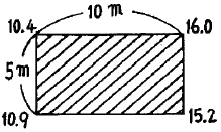
- 50m3
- 500m3
- 656m3
- 863m3
(정답률: 알수없음)
22. 하천수위의 갈수위에 대한 설명으로 옳은 것은?
- 1년을 통하여 275일간은 이것보다 내려가지 않는 수위
- 1년을 통하여 355일간은 이것보다 내려가지 않는 수위
- 1년을 통하여 185일간은 이것보다 내려가지 않는 수위
- 1년을 통하여 125일간은 이것보다 내려가지 않는 수위
(정답률: 알수없음)
23. 다음 중 높은 정확도가 요구되는 지하매설물의 측량기법에 속하지 않는 것은?
- 전자유도 측량기법
- 지중레이다 측량기법
- 음파 측량기법
- 관성 측량기법
(정답률: 60%)
24. 노선측량의 순서를 도상계획, 예측, 실측, 및 공사측량 등으로 시행할 때 다음 설명 중 옳지 않은 것은?
- 실측에는 중심선 설치, 종 횡단측량, 용지측량, 시공측량 등이 있다.
- 예측은 답사에서 얻은 유망한 노선에 대하여 더욱 자세하게 조사한 후 현장에 곡선 설치를 하는 단계이다.
- 용지측량은 노선구역에 대한 지가 보상 문제 등의 자료로 이용된다.
- 시공측량은 설계되어 있는 대로 현장에서 공사를 진행하기 위한 측량이다.
(정답률: 알수없음)
25. 클로소이드 곡선의 반지름 R=20m, 곡선길이 L=5m 일 때 클로소이드(clothoid)의 매개변수 A는 얼마인가?
- 5m
- 10m
- 15m
- 20m
(정답률: 60%)
26. 도시계획사업, 토지구획정리사업, 농지개량사업 및 기타법령의 토지개발사업 등에 의하여 토지를 구획하고 환지를 완료한 토지의 지번, 지목, 면적, 경계 또는 좌표를 지적공부에 등록하기 위해서 실시하는 측량은?
- 골조측량
- 경계측량
- 현황측량
- 확정측량
(정답률: 50%)
27. 터널내 중심선 측량과 가장 거리가 먼 것은?
- 중심선 도입측량과 중심말뚝 설치
- 터널내 고저측량
- 터널변형 측정
- 터널내 곡선설치
(정답률: 알수없음)
28. 다음 그림과 같은 하천의 유량은 얼마인가? (단, 각 구간의 평균유속은 다음 표와 같다.)
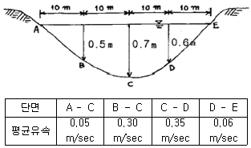
- 4.38m3/sec
- 4.83m3/sec
- 5.38m3/sec
- 5.83m3/sec
(정답률: 62%)
29. 아래 그림과 같은 횡단면도의 성토 부분의 면적은?
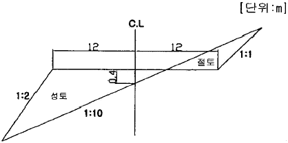
- 10m2
- 16m2
- 18m2
- 24m2
(정답률: 50%)
30. 단곡선 설치시 교각이 49° 30‘, 반지름 150m, 중심선 간격이 20m일 때 20m에 대한 편각은 얼마인가?
- 5° 52‘ 18“
- 4° 20‘ 15“
- 3° 49‘ 11“
- 1° 46‘ 32“
(정답률: 알수없음)
31. 단곡선 설치에 있어서 반지름 R=100m, 교각 I=30° 일 때 다음의 곡선요소는? (단, T.L은 접선장, C.L은 곡선장, C는 장현임)
- T.L = 26.79m, C.L = 52.36m, C = 51.76m
- T.L = 26.79m, C.L = 51.76m, C = 52.36m
- T.L = 51.76m, C.L = 26.79m, C = 52.36m
- T.L = 51.76m, C.L = 52.36m, C = 26.79m
(정답률: 40%)
32. 측위망원경에 의해 수평각을 측정하여 H'=80°를 얻었다. 주망원경과 측위망원경의 시준선 간의 거리 OC=23.10m이고, 시준선까지의 거리 AO=35.77m이었다면 실제 수평각(H)는 얼마인가?
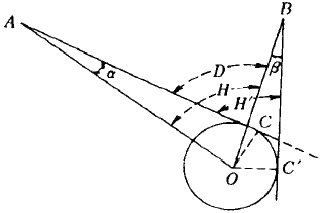
- 79° 55‘ 44“
- 80° ⑤‘ 16“
- 80° 11‘ ⑤“
- 80° 15‘ 25“
(정답률: 62%)
33. 수평 및 수직 거리관측을 동일한 정확도 1/m으로 관측하여 체적을 산정하였다면, 이 체적의 정확도는 얼마인가?
- 1/m
- 3/m
- 1/m3
- 3/m3
(정답률: 54%)
34. 노선측량의 클로소이드 곡선(clothoid curve)에 대한 설명으로 옳은 것은?
- 곡선의 반지름이 곡선 길이에 반비례한다.
- 고속도로에는 부적당하다.
- 일종의 종곡선으로 경사가 급한 산악지대에 적당하다.
- 철도의 종단곡선 설치에 효과적이다.
(정답률: 40%)
35. 하천측량에서 수위관측소의 설치장소에 대한 조건으로 옳지 않은 것은?
- 하상과 하안이 안전하고 세굴이나 퇴적이 생기지 않는 장소일 것
- 상ㆍ하류 약 100m 정도의 직선의 장소일 것
- 하저의 변화가 뚜렷한 장소일 것
- 잔류 및 역류가 없는 장소일 것
(정답률: 알수없음)
36. 다음 중 경관구성요소에 의한 분류(시점과 대상과의 관계에 의한 분류)에 속하지 않는 것은?
- 대상계(對象系)
- 경관장계(京觀場系)
- 상호성계(相互性系)
- 인공계(人工系)
(정답률: 알수없음)
37. 하천측량에 대한 설명 중 옳지 않은 것은?
- 트래버스측량의 트래버스는 삼각점을 기점과 종점으로 하는 결합 트래버스가 되도록 한다.
- 수애선은 평수위에 의하여 정해진다.
- 수위관측시 최고수위의 전후에는 6시간마다 관측한다.
- 종단측량은 좌우양안의 거리표고와 지반고를 관측하는 것이다.
(정답률: 알수없음)
38. 신설도로의 구간 No.10에서 No.10+10m 사이에 성토고 1m, 성토기울기 1:1:5, 도로폭 20m의 도로를 축조하고자 할 때 토공량은?
- 1⑤m2
- 115m2
- 2⑤m2
- 215m2
(정답률: 알수없음)
39. 두 직선의 교각 I=90°이다. 이들 직선 사이의 곡선을 설치하고 외선걸이(E)를 25m이상 취하고자 할 때 필요한 최소 곡선반지름(R)은?
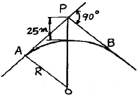
- 58.3m
- 60.4m
- 62.3m
- 64.3m
(정답률: 60%)
40. 갱내에서 차량 등에 의하여 파손되지 않도록 콘크리트 등을 이용하여 만든 기준점을 무엇이라 하는가?
- 도갱(道坑)
- 레벨(Level)
- 도벨(dowel)
- 입갱
(정답률: 50%)
3과목: 사진측량 및 원격탐사
41. 지리정보시스템에서 입력된 공간자료와 속성자료를 동시에 이용한 연산을 통해 모델링을 실시하는 유형으로 적당치 않은 것은?
- 화재발생 시 소방차 출동을 위한 최단거리 계산
- 도로설계 시 신설도로망을 중심으로 한 유력 상권의 분석
- 특정 지역을 기준으로 한 향(Aspect)의 분석
- 납골당 건설 예정지 선정을 위한 적지분석
(정답률: 알수없음)
42. GIS에서 데이터베이스 관리시스템(DBMS)의 개념을 적용함으로써 얻어지는 특징이 아닌 것은?
- 서로 연관된 자료 간의 자동적인 갱신이 가능하다.
- 도형자료와 속성자료 간에 물리적으로 명확한 관계가 정의 될 수 있다.
- 자료의 중앙제어가 가능하므로 자료의 보안성과 데이터베이스의 신뢰도를 높일 수 있다.
- 공간객체 간에 위치의 연관성을 구현하는데 위상관계의 정립이 불가능하다.
(정답률: 55%)
43. 도화작업의 주의사항으로 틀린 것은?
- 등고선 도화시에 언제나 높이값이 큰 편으로부터 움직여 맞추도록 한다.
- 도화시에 관측은 입체적인 과고감이 가능한 한 큰 상태에서 행하는 편이 높이의 관측정확도가 좋다.
- 프리즘의 위치를 가능한 한 작은 과고감이 생기게 배치한다.
- 눈의 피로를 적게 하기 위해 핀트를 정확히 맞춘다.
(정답률: 알수없음)
44. 카메라의 촬영경사(i)가 2°, 초점거리(f)가 153mm로 평탄한 토지를 촬영한 공중사진이 있다. 이 사진에서 주점(m)에서 등각점(j)까지의 거리는?
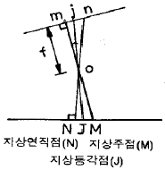
- 1.6mm
- 2.2mm
- 2.7mm
- 3.3mm
(정답률: 19%)
45. 평탄한 지면을 화면크기 23×23cm의 사진기로 촬영한 항공사진이 있다. 이 사진의 주점 기선장이 9cm 이었다면 중복도는?
- 41%
- 51%
- 61%
- 71%
(정답률: 55%)
46. 자료의 표준화에 많이 사용되는 “자료에 대한 자료”를 뜻하는 용어는?
- 검증데이터
- 메타데이터
- 표준데이터
- 메가데이터
(정답률: 알수없음)
47. 사진측량용 사진기와 일반사진기를 비교하였을 때 사진측량용 사진기에 대한 설명으로 옳지 않은 것은?
- 해상력과 선명도가 높다.
- 거대하고 중량이 크다.
- 렌즈의 지름이 크다.
- 셔터 속도가 느리다.
(정답률: 55%)
48. 다음 중 해석적 내부표정에 사용되는 부등각사상변환(affine transformation)은 어느 것인가? (단, X, Y는 사진좌표, x, y는 관측좌표, xo, yo는 원점미소변위, a, b는 미지계수를 나타낸다.)
- X=a1x2+b1y2+xo, Y=bx2+a2y2+yo
- X=a1x+a2y+xo, Y=b1x+b2y+yo
- X=a1x+a2y+a3xy+xo, Y=b1x+b2y+b3xy+yo
- X=a1x+a2y+a3xy+a4x2+a5y2+xo, Y=b1x+b2y+b3xy+b4x2+b5y2+yo
(정답률: 알수없음)
49. 위성영상의 기하보정시 사용하는 재배열 방법으로서, 내삽점 주위 4점의 화소값을 이용하여 가중평균값으로 내삽하는 방법은?
- 들로네 삼각법(delaunay triangulation)
- 공일차 내삽법(bilinear interpolation)
- 최근린 내삽법(nearest neighbor)
- 3차 회선법(cubic convolution)
(정답률: 50%)
50. 사진화면의 크기 23cm×23cm인 사진기로 평탄하고 수평한 토지의 연직사진을 촬영하였다. 촬영고도가 4,500mm이고 촬영된 면적이 47.6km2일 때 사진의 초점거리는?
- 15cm
- 21cm
- 25cm
- 30cm
(정답률: 0%)
51. 사진판독의 순서를 바르게 나열한 것은?
- 촬영계획 → 촬영과 사진작성 → 판독기준의 작성 → 판독 → 현지조사 → 정리
- 현지조사 → 촬영계획 → 촬영과 사진작성 → 판독 → 기준의 작성 → 판독 → 정리
- 판독기준의 작성 → 현지조사 → 촬영계획 → 촬영과 사진작성 → 판독 → 정리
- 판독기준의 작성 → 정리 → 현지조사 → 촬영계획 → 촬영과 사진작성 → 판독
(정답률: 70%)
52. 사진기준점 측량에서 입체모형좌표값을 계산하는 과정은?
- 내부표정
- 상호표정
- 절대표정
- 외부표정
(정답률: 알수없음)
53. 일반적인 원격탐사(Remote Sensing) 자료의 처리 순서로 적당한 것은?
- 분류처리 - 전처리 - DB구축 - GIS통합 - 자료수집 - 강조처리
- 분류처리 - 전처리 - GIS통합 - DB구축 - 자료수집 - 강조처리
- 자료수집 - 전처리 - 강조처리 - 분류처리 - DB구축 - GIS통합
- 자료수집 - 전처리 - 분류처리 - 강조처리 - DB구축 - GIS통합
(정답률: 알수없음)
54. 지면이 비고 40m인 산악지에 있어서 초점거리 15.3cm의 사진기로 촬영한 사진이 23cm×23cm의 크기로 축척이 1/20,000 이었다. 이 사진의 비고에 의한 최대 가복변위는?
- 0.21m
- 0.27m
- 0.32m
- 0.43m
(정답률: 0%)
55. 지리정보시스템을 구현하기 위해 입력, 저장되는 공간자료의 형태로 적절치 않은 것은?
- Point
- Line
- Surface
- Code
(정답률: 알수없음)
56. 편위수정에 대한 설명으로 옳은 것은?
- 경사 및 축척의 수정
- 기본변위의 수정
- 시차의 수정
- 비고의 수정
(정답률: 60%)
57. 가장 정확한 항공삼각측량 조정법은?
- 독립모델(모형)법
- 스트립법(다항식법)
- 번들조정법(광속법)
- 도해법
(정답률: 59%)
58. 축척 1/5,000 수치지도를 만들기 위하여 축척이 1/5,000인 종이지도를 스캐닝하였다. 이후 필요한 과정이 아닌 것은?
- 벡터 변환
- 정위치 편집
- 구조화 편집
- 일반화 편집
(정답률: 46%)
59. 지상사진측량에 관한 설명으로 옳지 않은 것은?
- 지상사진은 항공사진에 비하여 평면의 정확도는 낮으나 높이의 정확도는 좋다.
- 지상 입체 사진측량의 방법으로 물체의 3차원 위치를 구하는 방법으로서는 도해법, 기계법, 해석법 등이 있다.
- 지상사진측량은 후방교회법으로서 항공사진측량에 비해 기상변화의 영향이 크다.
- 지상사진측량은 문화재 조사 및 기록보존, 구조물의 변위측정, 고고학 등에 응용이 가능하다.
(정답률: 50%)
60. 일반적으로 지리정보시스템을 구현하기 위한 공간자료는 Vector Data Model과 Raster Data Model로 나누어진다. 다음 공간정보 타일 포맷 중 Raster Data Mode과 거리가 먼 것은?
- filename. tif
- filename. img
- filename. shp
- filename. bmp
(정답률: 60%)
4과목: 지리정보시스템
61. 다음 삼각측량의 기선에 대한 설명 중 틀린 것은?
- 공공측량에서의 기선설치는 필수 요소이다.
- 기지점이 하나도 없는 경우는 기선을 설치한다.
- 기선은 부근 삼각점에 연결이 가능한 곳을 선정한다.
- 기선은 원기선 길이에 20~25배 거리 간격을 두고 설치하는 것이 좋다.
(정답률: 64%)
62. 점 A, B가 등경사에 위치할 때 A의 표고는 37.65m, B의 표고는 53.26m, 두 점 사이의 도상길이는 68.5mm이다.
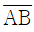
선성의 표고 40.00m 지점의 위치는 A로부터 도상에서 몇 mm 떨어진 곳에 위치하는가?- 8.5mm
- 7.8mm
- 10.3mm
- 9.7mm
(정답률: 40%)
63. 삼변측량에 대한 설명으로 옳은 것은?
- 상변측량 장비로서 셔란과 하이란 등을 사용할 수 있다.
- 디지털 데오도라이트가 출현하여 각관측이 가능함에 따라 발달된 방법이다.
- 각을 관측한 후 변의 길이를 계산하여 위치를 결정한다.
- 정확도가 낮아서 최근에는 삼각측량을 더 많이 사용한다.
(정답률: 46%)
64. 수준측량에서 9km 떨어진 두 점에 대한 고저차의 표준오차가 ±20mm 였다면 같은 정확도로 측정한 1km 떨어진 A, B점에 대한 고저차의 표준오차는?
- ±2.2mm
- ±3.3mm
- ±4.5mm
- ±6.7mm
(정답률: 알수없음)
65. 다음 중 마라톤 코스와 같은 표면거리를 측정할 수 있는 기기로 가장 적절한 것은?
- 중량이 작은 강철자
- 기선에서 검정된 자전거
- 전자파 거리측정기
- 유리섬유테이츠
(정답률: 59%)
66. 수평각 관측에서 수평축과 시준축이 직교하지 않음으로써 일어나는 각 오차는 어떻게 소거하는가?
- 정ㆍ반위관측
- 반복법관측
- 방향각법 관측
- 조합각관측법
(정답률: 알수없음)
67. 점 C의 좌표를 구하기 위하여 그림과 같이 기지점 A와 B로부터 삼각측량을 실시하였다. 이와 같은 경우에 적용하여 조정하여야 할 방정식만으로 짝지어진 것은?
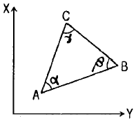
- 각방정식
- 각방정식, 측점방정식
- 각방정식, 측점방정식, 변방정식
- 각방정식, 측점방정식, 변방정식, 좌표조정
(정답률: 알수없음)
68. 동일한 정밀도로 각을 관측하여 α=39° 19‘ 40“, β=52° 25’ 29”, γ=91° 45‘ 00"를 얻었다. γ의 최확치
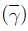
는?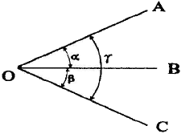
- 91° 44‘ 57“
- 91° 44‘ 59“
- 91° 45‘ 01“
- 91° 45‘ 03“
(정답률: 알수없음)
69. 좌표원점을 중심으로 X=524.62m, Y=175.36m일 경우의 방위각은 얼마인가?
- 161° 31‘ 02“
- 341° 31‘ 02“
- 18° 28‘ 58“
- 198° 28‘ 58“
(정답률: 60%)
70. 다음 중 전시만 읽는 점으로 다른 점의 지반고에 영향을 주지 않는 점을 무엇이라 하는가?
- 중간점
- 이점
- 수준점
- 기지점
(정답률: 알수없음)
71. 시가지의 정사각형 토지를 50m 강철테이프로 측정하여 4,900m2의 면적을 얻은 후 테이프가 표준보다 20cm 늘어나 있음을 발견했다. 정확한 토지의 면적은 얼마인가?
- 4,861m2
- 4,899m2
- 4,919m2
- 4,939m2
(정답률: 알수없음)
72. 두 점의 평면직각좌표계로부터 계산되는 측선의 방향은 다음 중 어느 것에 해당하는가?
- 진북 방향각
- 진북 방위각
- 도북 방위각
- 자북 방위각
(정답률: 알수없음)
73. 삼각망의 조정계산에 있어 조건에 따른 설명이 틀린 것은?
- 어느 한 측점 주위에 형성된 모든 각의 합은 360° 이어야 한다.
- 삼각망의 각 삼각형의 내각의 합은 180° 이어야 한다.
- 한 측점에서 측정한 여러 각의 합은 그 전체를 한 각으로 관측한 각과 같다.
- 한 개 이상의 독립된 다른 경로에 따라 계산된 삼각형의 어느 한 변의 길이는 그 계산경로에 따라 달라야 한다.
(정답률: 알수없음)
74. 그림에서 기지점 A, B를 기준으로 ∠β와 거리 S를 측정하여 P의 좌표를 구하였다. P점의 X좌표의 표준편차는? (단, β=165° 29‘ 00“ ±7”, S=2,000m ± 5cm, T=239° 31' 00", ρ"=2×105 기지점에는 오차가 없음)
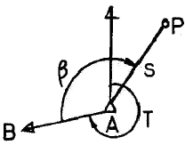
- ± 6cm
- ± 9cm
- ± 13cm
- ± 19cm
(정답률: 알수없음)
75. 트랜싯의 3축 조정 중 잘못된 것은?
- 망원경 기포관축과 수평축은 직교해야 한다.
- 수평축과 연직축은 직교해야 한다.
- 수평축과 시준축은 직교해야 한다.
- 망원경 기포관축과 연직축은 직교해야 한다.
(정답률: 알수없음)
76. 축척 1:50,000 지형도상에서 A, B 두 점의 거리가 8.0cm이었고 축척을 모르는 다른 지형도상에서 동일한 A, B 두 점 간의 거리가 56.0cm라고 한다면 이 지형도의 축척은 얼마인가?
- 약 1:5,000
- 약 1:7,000
- 약 1:10,000
- 약 1:14,000
(정답률: 알수없음)
77. 양차 0.01m가 되기 위한 수평거리는 얼마인가? (단, k=0.14, 지구곡률반지름(R)=6,370km)
- 400m
- 395m
- 390m
- 385m
(정답률: 50%)
78. 다음 그림과 같은 수준측량에서 P점의 표고는?
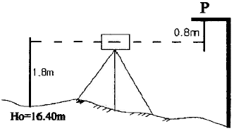
- 17.40m
- 18.00m
- 18.40m
- 19.00m
(정답률: 70%)
79. 같은 경중률로 측량한 거리 측량결과 10회의 평균값이 100.45m 이었다. 이 때 잔차제곱의 합이 0.⑤79m이고 잔차의 합이 -0.10m이라고 하면 거리를 평균값 ±표준편차로 나타내면?
- 100.45m ± 0.⑤m
- 100.45m ± 0.08m
- 100.45m ± 0.13m
- 100.45m ± 0.15m
(정답률: 46%)
80. 다음 등고선의 성질 중 잘못된 것은?
- 등고선은 도면 내외에서 폐합하는 곡선이다.
- 높이가 다른 두 등고선은 동굴이나 절벽과 같은 지형에서는 교차한다.
- 등고선은 최대경사방향과 직각으로 교차한다.
- 등고선은 경사가 습한 곳에서는 간격이 넓고, 완만한 경사에서는 좁다.
(정답률: 알수없음)
5과목: 측량학
81. 다음 중 영구표지가 아닌 것은?
- 측표
- 방위표석
- 기선표석
- 위성측지기준점표지
(정답률: 70%)
82. 측량업의 등록을 하고자 하는 자가 신청서에 첨부해야 할 서류 중 옳지 않은 것은?
- 개인의 경우 사무실의 건물 등기부 등본
- 법인인 경우 등기부 등본
- 기술능력을 갖춘 사실을 증명하는 서류
- 장비를 갖춘 사실을 증명하는 서류
(정답률: 60%)
83. 다음 측량법상 용어의 정의 설명 중 틀린 것은?
- 측량업자라 함은 측량법의 규정에 따라 등록하여 측량업을 영위하는 자를 말한다.
- 발주자라 함은 측량용역을 측량업자에게 도급주는 자를 말하며, 수급인으로서 도급받은 측량용역을 하도급주는자는 제외한다.
- 측량업이라 함은 기본측량, 공공측량 또는 일반측량의 용역을 도급받는 영업을 말한다.
- 측량이라 함은 토지 및 연안해역의 측량을 말하며, 측량용 사진의 촬영은 제외한다.
(정답률: 47%)
84. 기본측량의 측량성과 고시에 필수적 사항이 아닌 것은?
- 측량의 종류
- 측량실시의 시기 및 지역
- 측량성과의 보관장소
- 측량실시자
(정답률: 42%)
85. 기본측량실시로 인한 손실보상의 협의 대상자는?
- 건설교통부장관과 국토지리정보원장
- 국토지리정보원장과 손실을 받은 자
- 측량계획기관과 국토지리정보원장
- 손실을 받은자와 측량계획기관
(정답률: 알수없음)
86. 다음 중 국가기준점(삼각점 및 수준점 등)인 영구표지에 이상이 있음을 발견하였을 때 시장, 군수 및 구청장이 보고하여야 할 기관은?
- 관할 경찰서장
- 행정자치부장관
- 건설교통부장관
- 노동부장관
(정답률: 알수없음)
87. 건설교통부장관의 권한을 국토지리정보원장에게 위임한 사항 중 옳지 않은 것은?
- 지형ㆍ지물의 변동에 관한 보고의 접수
- 공공측량 작업규정의 승인
- 측량성과의 국외 반출 허가
- 공공측량의 심사
(정답률: 알수없음)
88. 수치지형도의 보완은 몇 년마다 1회이상 실시하여야 하는가?
- 1년
- 2년
- 3년
- 4년
(정답률: 60%)
89. 측량협회에 대한 설명으로 틀린 것은?
- 협외의 회장ㆍ부회장ㆍ이사 및 감사의 임기는 2년으로 한다.
- 협회는 법인으로 한다.
- 측량업자는 협회의 정관이 정하는 바에 의하여 협회의 회원이 될 수 있다.
- 협회는 그 주된 사무소의 소재지에서 설립등기를 함으로써 성립한다.
(정답률: 40%)
90. 1/5,000 지형도상 외도곽과 내도곽 사이에 표시할 사항이 아닌 것은?
- 행선지명
- 도달거리(km)
- 범례
- 좌표수치
(정답률: 알수없음)
91. 측량법에서 정한 측량작업기관의 설명으로 가장 옳은 것은?
- 측량계획기관의 지시 또는 위임에 의하여 측량에 관한 작업을 실시하는 자
- 누구든지 측량작업을 실시하는 자
- 측량계획기관이 그 계획한 측량을 직접 실시할 때는 측량작업기관이 될 수 없다.
- 국가 또는 지방공공단체에서 실시하는 측량을 위임 받은 자
(정답률: 알수없음)
92. 측량업자의 벌칙 중 1년 이하의 징역 또는 1,000만원 이하의 벌금에 처하는 내용은?
- 정당한 사유없이 측량의 실시를 방해한 자
- 부정한 방법으로 측량업의 등록을 한 자
- 무단으로 측량성과를 복제한 자
- 측량업자의 신고의무를 허위로 신고한 자
(정답률: 28%)
93. 1/5,000 지형도 도식규정에서 지류의 표시원칙으로 잘못된 것은?
- 그 지역의 주위를 지류계로 표시하고 내부에 지류기호 표시
- 지역면적이 도상 10mm2미만의 것은 표시하지 않는다.
- 식물기호는 지류계, 경지계로 구역을 표시하고 그 내부 중앙에 표시
- 동일식물의 소지역이 근접하여 있는 경우 경황을 고려하여 적의 취사선택하여 표시
(정답률: 알수없음)
94. 건설교통부장관은 일반측량의 성과가 다음의 목적을 위하여 필요하다고 인정되는 경우에는 일반측량의 실시자에게 측량성과 및 측량기록 사본의 제출을 요구할 수 있다. 이 때 그 목적에 해당하지 않는 것은?
- 측량의 정확성 확보
- 측량지역 경제분쟁조정
- 측량의 중복배제
- 측량에 관한 자료의 수집ㆍ분석
(정답률: 알수없음)
95. 측량법에 정의된 측량업의 종류로 잘못된 것은?
- 일반측량업
- 연안조사측량업
- 소규모측량업
- 지하시설물측량업
(정답률: 알수없음)
96. 국토지리정보원장이 간행하는 지도의 축척으로 옳지 않은 것은?
- 1/5,000
- 1/25,000
- 1/15,000
- 1/1,000
(정답률: 알수없음)
97. 기본측량의 설명으로 잘못된 것은?
- 국토지리정보원장은 년간 계획을 수립한다.
- 모든 측량의 기초가 되는 측량이다.
- 건설교통부장관이 실시한다.
- 기본측량에 종사하는 자는 측량을 실시하기 위하여 필요한 때에는 타인의 토지나 건물에 출입할 수 있다.
(정답률: 40%)
98. 측량기술자의 측량용역현장 배치에 관한 기준으로 틀린 것은?
- 기본측량용역의 경우 : 고급기술자 1인 이상
- 공공측량용역의 경우 : 중급기술자 2인 이상
- 일반측량용역의 경우 : 중급기술자 1인 이상
- 측량용역의 발주자가 당해 용역의 관리에 적정한 측량 기술자의 배치를 요청하는 때에는 그에 필요한 측량기술자를 배치하여야 한다.
(정답률: 55%)
99. 우리나라의 기본측량 및 공공측량의 기준을 설명한 것 중 옳지 않은 것은?
- 위치는 경위도 및 평균해면으로부터의 높이로 표시하되 필요한 때에는 중력좌표 또는 천문좌표로 표시할 수 있다.
- 지리학적 경위도는 세계측지계에 따라 측정한다.
- 측량의 원점은 대한민국 경위도원점 및 수준원점으로 한다.
- 거리와 면적은 회전타원체면상의 값으로 표시한다.
(정답률: 0%)
100. 일반측량은 어떤 측량을 기초로 하여 실시하는 것을 원칙으로 하는지 가장 적합하게 설명한 것은?
- 공공측량 또는 일반측량의 측량성과와 측량기록을 기초로 한다.
- 기본측량의 측량성과와 측량기록만으로 한다.
- 기본측량 또는 공공측량의 측량성과와 측량기록을 기초로 한다.
- 일반측량의 측량성과와 측량기록만으로 한다.
(정답률: 알수없음)